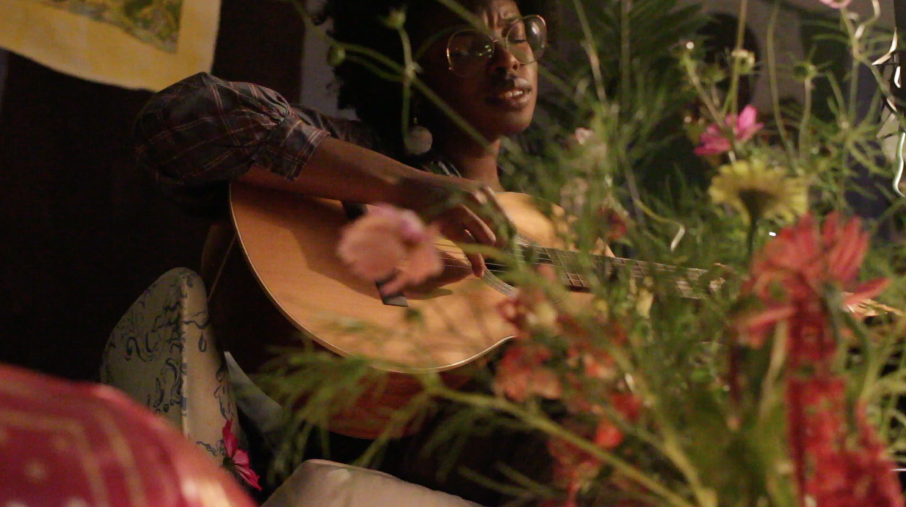

As the first of this series, we will have a music-centered event calling the monster to emerge. We will do this through the introduction of a CT local covers show. We are inviting two musical artists well-versed in the current CT music scene (the lovely Esmer and Earth angel Nehway) to perform covers of the local artists that form their community. This generation of young musicians in our area is uniquely tight-knit, and we want to illustrate the effect this phenomenon has on their art. For them, these artists are not just inspirations but also friends, collaborators, and even fellow fans.
Beyond a celebration of the artists themselves, this is also a celebration of local fan culture. There is a strong community of young music fans in the area who consistently show up to the concerts, support their favorite artists, and know the songs by heart. Many fans find out about new artists at shows with the artists they already know, so there is a good amount of crossover between fanbases. For them to be able to hear the songs they know and love, but in a new style and in different voices, is something new and engaging we can offer through our festival.

❁Nehway live at Folk Festival 2022, with flowers by Fairy Meadow Flowers
Lastly, this is also an elevation of local music to cover-able status. Often, when independent musicians do covers, they are of people who are more established in the field, since those are the songs people will recognize. Here, we want to acknowledge that New Haven’s beautiful fan culture allows songs by local musicians to also fall into that category of ‘recognizable’ music. We want to encourage local musicians to recognize how well-loved they are in our community.
contact: jisusheen[at]gmail.com